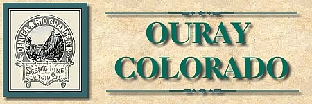
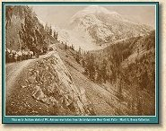
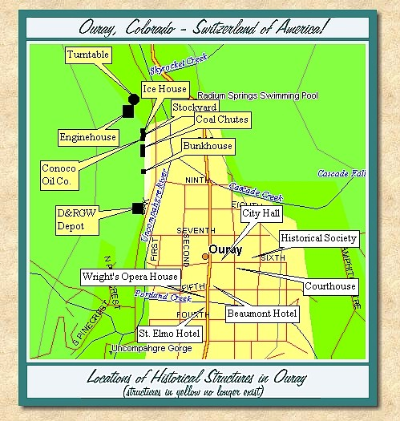

|
Ouray, Colorado - very early photo, not long after incorporation in Oct. 1876
(Image m0014)(203k) |

| Ouray is set in one of the most magnificent locations in Colorado. Surrounded by high mountain walls dominated by Mount Abrams to the south, and the awe inspiring Amphitheater to the east, Ouray is truly the Gem of the Rockies. Today the town's history is very evident in its well preserved historic structures. While tourism is a strong contributor to the local economy, Ouray has escaped the excesses of over-development. Make no mistake, this is not Telluride. Real people live here, and real people visit here, to hunt, hike and jeep the high country above town. If you visit in the winter, bring your ice climbing gear or cross country skis. Whenever you visit, bring your camera. |
|
|
Ouray, Colorado - very early photo, not long after incorporation in Oct. 1876
(Image m0014)(203k) |
|
 |
Mount Abrahms - W. H. Jackson
This image was taken at the bridge over Bear Creek Falls on what is today "The Million Dollar Highway" |
| The earliest visitors to the area were a group of prospectors who arrived in the summer of 1875 from the vicinity of Engineer Mountain. A number of claims were laid out, including the Fisherman and Trout lodes which were located in present day Box Canyon Park. The first cabin was erected in October of 1875. A year later, the town of Ouray was incorporated on October 2, 1876. In January 1877, Ouray County was formed from the northern end of San Juan County and Ouray was made the county seat. At the time of its founding, Ouray County include the area that would later become Dolores and San Miguel counties. Dolores County was split off in 1881 with Rico as its county seat. San Miguel County was formed in 1883 with Telluride as its county seat. |
| By 1880 over 2,600 people lived in Ouray. The local area around Ouray had significant ore deposits, but the greatest concentration of high quality deposits were in the Ironton area 10 miles south of town and the Sneffels district and Imogene Basin workings to the west and southwest. Ouray became the shipping point and logistics center of the region, a role that it would serve for over 90 years. |

|
Ouray, Colorado
1880 (Image m0047)(74k) |
| Unlike other mining towns, Ouray never experienced a large fire that consumed a large portion of the town. As a result, a significant number of 19th century commercial buildings remain in town. Some of them, and their construction dates, are listed below: |
| Ouray County Historical Society | 1887 |
| (Originally St. Joseph's Hospital) | |
| The Beaumont Hotel | 1887 |
| Wright's Opera House | 1888 |
| County Courthouse | 1888 |
| The Western Hotel | 1891 |
| St. Elmo Hotel | 1899 |
| City Hall | 1900 |
| The Beaumont is listed on the National Historic Register, and is a magnificent structure. Unfortunately, it has stood boarded up on the corner of Fifth Avenue and Main for many years. In August of 1997 it was placed on the market by the estate of its last owner. Hopefully a buyer can be found with the resources to restore the structure to its former elegance and prominence as the center of Ouray's commerce and social life. The court room scenes in the movie ‘True Grit' were filmed in the Courthouse. The Historical Society is a treasure house of material for historians, or tourists interested in learning a little more bout the region. |
| A large number of private homes have also survived from the 19th century. Check with the Historical Society for a walking tour of Ouray's homes. |

|
Ouray, Colorado
1881 (Image 303) (198k) |

|
Ouray, Colorado
1881 (Image 304) (111k) |
| - The Railroad Arrives - Almost - |
| The Denver and Rio Grand Railway reached Gunnison in August 1881, and built through the Black Canyon of the Gunnison to reach Montrose in September 1882. From Montrose, the Rio Grande narrow gauge mainline pushed on to Grand Junction, Salt Lake City and Ogden, Utah. The railroad completed its route to Salt Lake City on March 30, 1883 when the construction crews of the Denver and Rio Grande Railway and the Denver and Rio Grande Western Railway met at Desert Switch. By the middle of May 1883 the line to Ogden and the connection to the Central Pacific was completed. Although the Rio Grande surveyed a branch from Montrose to Ouray in the fall of 1881, funds were needed to complete the Salt Lake route. After General Palmer lost control of the Denver and Rio Grande Railway later in 1883, no additional lines were constructed until 1887. |

|
Placer mining between Ouray and Dallas on the Uncompahgre
1884 (Image 305) (157k) |

|
Ouray, Colorado
1884 (Image m0066)(171k) |

|
Ouray, Colorado
1884 (Image m0067)(108k) |

|
Ouray, Colorado
1884 (Image m0028)(127k) |
| - Competition - |
| By 1886, the Colorado Midland Railroad had built its standard gauge line into Leadville. This line also reached Aspen and was seen as a very real threat to penetrate other areas not already served by the Rio Grande. This competition shook the Rio Grande out of its complacency and expansion again became the word of the day. Grading on the Ouray branch was started in June of 1887. In addition, grading on the Lake City branch was restarted in 1887. |

|
Ouray, Colorado
(Image 262) (187k) |
| Meanwhile, events were beginning to occur in the San Juans which would change railroading in Ouray just as it began. Otto Mears, the "Pathfinder of the San Juans" was developing his Silverton Railroad to tap the riches of the mines of northern San Juan County, south of Red Mountain Pass. Construction of the Silverton RR began in the summer of 1887. The goal of the railroad was to serve the mines of the Red Mountain Mining District, and provide a direct route to the smelter at Durango via the D&RG Silverton branch. The Silverton Railroad reached the summit of Red Mountain Pass on July 25, 1888. The line was completed to Albany in Ironton Park on September 20, 1889. Mines throughout the Red Mountain district now had a cheap source of transportation for their ore which avoided the torturous pack train trip down the toll road to Ouray. |
| Flush with his success on the Silverton and owning a number of toll roads in the western San Juans suitable for roadbed, Mears began construction of the Rio Grande Southern Railroad in 1891. Running 162 miles from Durango to an interchange with the Montrose branch of the D&RG at the new town of Ridgway, 10 miles north of Ouray, the RGS would become Mears' greatest achievement. |
| - The Railroad Arrives - Finally - |
| The first scheduled D&RG train, headed by a Class 37 4-4-0 named the "Pike," arrived in Ouray on December 21, 1887. A two stall wood framed engine house, 36 feet wide by 76 feet long, was built in early 1888. Additional facilities constructed that year included a 50 foot gallows turntable, turned by hand. The depot, based on standard Rio Grande practice, but with unique hip roof details, originally measured 26 by 37 feet. Later a 24 by 48 foot addition was added to the depot. The depot was opened on September 28, 1888. A standard section house, a bunk house, a one car capacity stock pen and water column completed the facilities. Today, all of the railroad structures are gone, but a well maintained D&RGW caboose is on display at the Hot Springs Pool. |
| The first of the narrow gauge railroad excursions came to Ouray in August of 1888. These were soon promoted by the Rio Grande as "Around the Circle" tours. The original route traveled from Pueblo to Salida, over Marshall Pass to Gunnison and then to Montrose and on to Ouray. Travelers then took stagecoaches from Ouray to Chattanooga to board the Silverton RR to Silverton, then back on the Rio Grande from Silverton to Durango and over La Veta Pass to Pueblo. These tours would prove to be very popular over the years. After the completion of the RGS, it became part of the tour. The route would be further modified after completion of the Cumbres Pass line on the D&RG to include stops at Chama and Antonito. |

|
Ouray, Colorado
1890 (Image m0013)(114k) |
| - The Ouray and Ironton Electric Railway - |
| In 1892 Otto Mears and a group of investors incorporated the Ouray and Ironton Electric Railway, Light and Power Company. This line was surveyed between Ironton and Ouray, running down through the Uncompahgre Gorge along the route of Mears' toll road. Mears and his backers realized that conventional steam power would be impractical on such a route. It would have run on 7 percent grades with very tight curves, a tunnel, and a complete spiral in Ouray near the entrance to Box Canyon Park. Long range transmission of AC electrical power was being successfully demonstrated in the San Juans by the Ames hydroelectric plant, and traction motor development had reached a reliable level by this time. An electrified line could be used to connect Ironton and Ouray. Completion of the line would have offered a significantly shorter alternative to the RGS rail connection between Ouray and Silverton, and would have routed a larger share of ore to the mills around Ouray. This fabulous plan was abandoned in the wake of the Silver Panic of 1893. |

|
Ouray, Colorado
1892 (Image 00128) (165k) |

|
Ouray, Colorado
1892 (Image 260) (188k) |

|
Ouray, Colorado
1892 (Image 261) (158k) |
| - The Silver Panic of 1893 - Impact on Ouray - |
| The repeal of the 1890 Silver Purchase Act in 1893 was a watershed event in all the Colorado mining towns. The economy of Ouray was seriously impacted, but to a much lesser extent than other districts. The discovery of gold in the Lookout Mountain area and Tom Walsh's 1896 opening of the Camp Bird Mine maintained a significant level of employment in the region for many years. Output from the Camp Bird Mine and Mill came down to Ouray on wagons for shipment out on the D&RG. |
| With it's spectacular setting and hot springs, Ouray had already become a tourist destination. The population of Ouray was not dominated by rough and tough unmarried miners. A significant number of families with children lived in Ouray by the 1890's. Such people are less likely to abandon their homes and businesses in the face of economic hardship. Although its population gradually declined for many years, Ouray never had the look or feel of a dying town. |

|
Train leaving Ouray
1910 (Image m0012)(103k) |
| - Railroad Abandonment - |
| By 1930, increased competition from the automobile and a desire on the part of D&RGW management to abandon narrow gauge operations led to an application by the railroad to discontinue regular passenger service. This was approved by the Colorado Public Utilities Commission, and the last regularly scheduled passenger train left Ouray on September 14, 1930. In 1936, all passenger service to Ouray ended with the elimination of mixed train operations. In 1952, the railroad received permission to abandon the track between Ridgway and Ouray. In conjunction with the abandonment of this trackage, the line from Ridgway to Montrose was standard gauged. In 1972 the line from Ridgway to Montrose was finally abandoned entirely, ending 85 years of railroad operations in Ouray County. |

|
Stage road Between Silverton and Ouray at Red Mountain
1889 (Image 245) (162k) |

|
Mears Toll Road
between Silverton and Ouray 1892 (Image 268) (175k) |

|
Million Dollar Highway between
Ouray and Silverton 1925 (Image 302) (101k) |

|
Million Dollar Highway between
Ouray and Silverton 1925 (Image 301) (267k) |
| - Ouray Today - |
| Ouray is a vibrant small town today. Besides the views and hot springs, it has a number of Jeep rental agencies which also offer tours for those who prefer to let someone else do the driving. There are accommodations and restaurants for every budget. While it seems more and more visitors discover Ouray each year, the town has managed to maintain itself as a place where real people can live. If you visit, treat them with respect. They've managed to live where you wish you could. |
